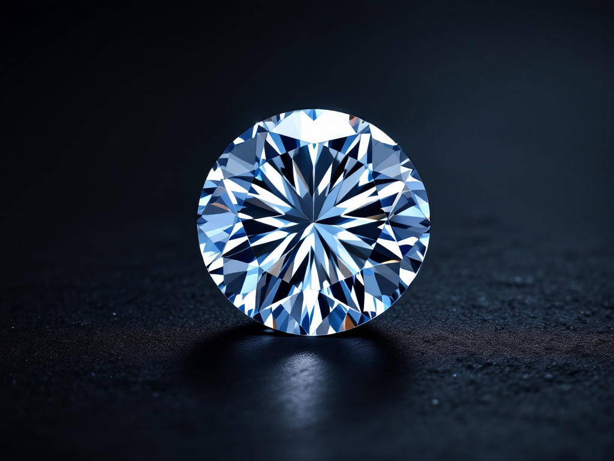
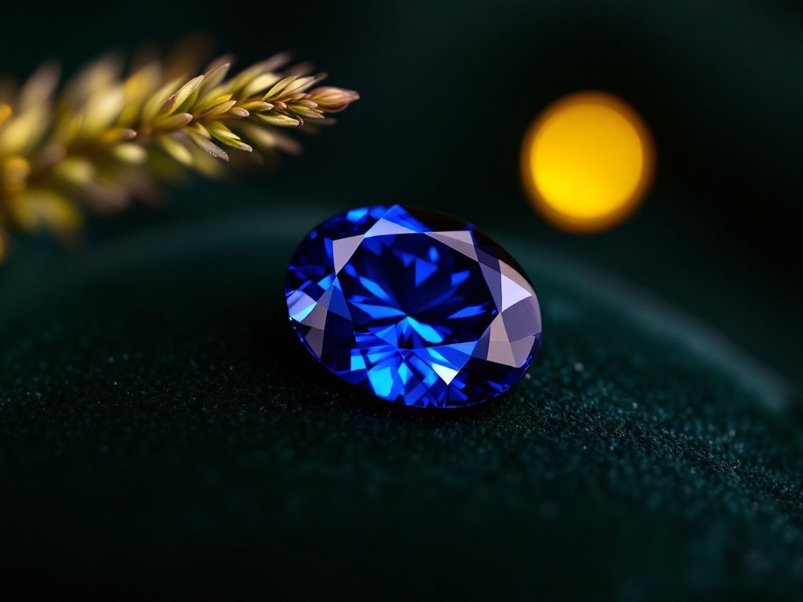
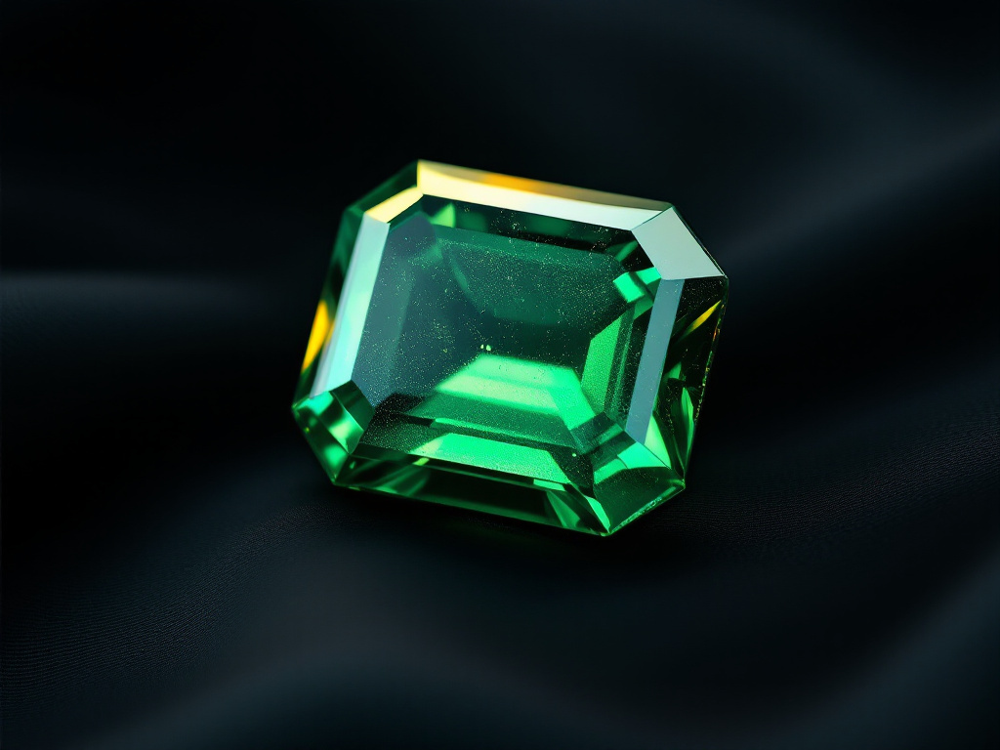
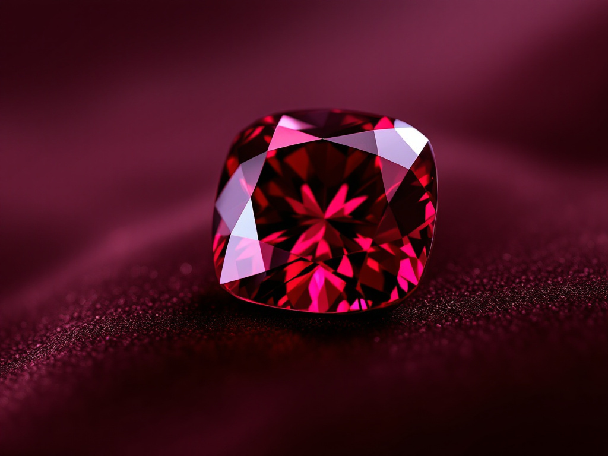

Le cœur de nos créations
Chaque pierre raconte une histoire
« Chaque pierre raconte une histoire, chaque diamant capture un éclat éternel. »

Le cœur de nos créations
« Chaque pierre raconte une histoire, chaque diamant capture un éclat éternel. »

Notre sélection
Chaque création BALLIN Paris commence par le choix minutieux des pierres — véritables cœurs battants de nos bijoux. Nous privilégions des gemmes d'une qualité exceptionnelle, aux couleurs et éclats incomparables, sélectionnées selon des critères stricts de pureté, de taille et de brillance.
Parce que chaque histoire est unique, nous offrons la possibilité de personnaliser vos pièces : choix d'une pierre exceptionnelle, sourcing spécifique pour une création sur-mesure. Notre équipe met tout son savoir-faire au service de vos envies.
Les pierres précieuses

Avril · 60e anniversaireCertifié GIA · HRD · IGI
L'éclat absolu. Symbole d'éternité, il capture la lumière comme nulle autre pierre. Sélectionné selon les 4C.

Septembre · 16e anniversaireCeylan · Madagascar · Myanmar
Symbole de sagesse et de noblesse, il fascine par ses nuances profondes et envoûtantes — le bleu royal des couronnes.

Mai · 20e anniversaireColombie · Zambie · Brésil
Éclatante de vitalité, elle incarne la nature et la renaissance à travers ses teintes vibrantes de vert.

Juillet · 15e anniversaireBirmanie · Mozambique · Thaïlande
Intense et flamboyant, « sang de pigeon », il est l'expression ultime de la passion et de la puissance.
Le diamant
Le poids de la pierre, en carats (1 ct = 0,2 g). Plus le diamant est lourd, plus il est rare.
Échelle de D (incolore, la plus prisée) à Z. Nous sélectionnons au minimum du G, d'un blanc exceptionnel.
De FL (sans inclusion) à I3. Nos diamants sont au minimum VS — les inclusions sont invisibles à l'œil nu.
La taille détermine la brillance. Taille brillant, princesse ou poire : chaque facette est calculée pour renvoyer la lumière.

Éthique & certification
Tous nos diamants sont accompagnés de certificats délivrés par des laboratoires internationaux de renom (GIA, HRD, IGI), garants de leur qualité selon les 4C.
Engagés dans une joaillerie responsable, nous exigeons que chaque pierre respecte le processus de Kimberley, excluant toute origine liée à un conflit. Origine, taille, certificat : chaque pierre BALLIN est entièrement traçable.
Sur-mesure
Envie d'une pierre d'exception ou d'un sourcing spécifique ? Nos conseillers vous accompagnent dans le choix de LA pierre.